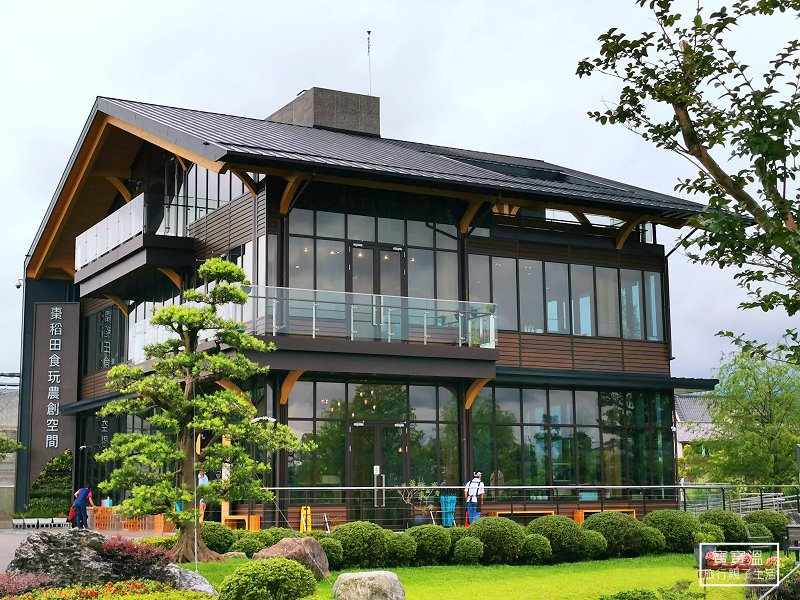
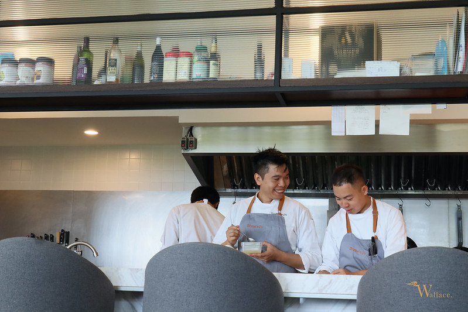
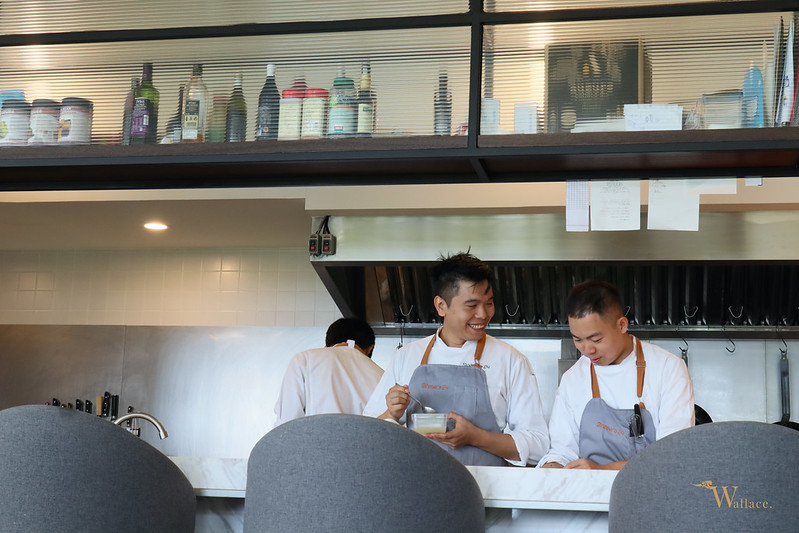
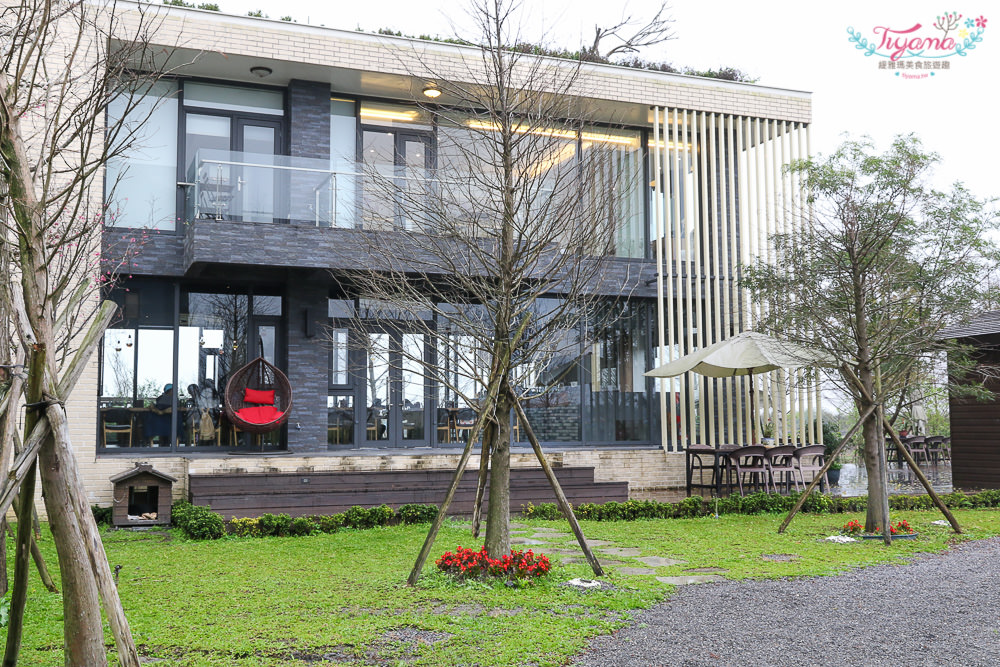

宜蘭棗稻田餐廳
棗稻田
- 地址： 宜蘭縣員山鄉員山路二段172巷17號
- 電話： 03-9226648
- 營業時間：9:30 ~ 17:00
- 餐廳官網：棗稻田
-
網路介紹：
- 三立新聞網：宜蘭棗稻田食玩農創空間 打造全台第一棟CLT建物
- Youtube: 宜蘭：生態美食之旅 | 棗稻田
- 寶寶溫旅遊


棗稻田食玩農創空間
摘錄 三立新聞網： 宜蘭自雪隧通車以來，台北-宜蘭形成一日生活圈，讓許多休閒農場與民宿發生質的提昇，同時也產生了多個具有口碑的觀光工廠。金色大地(股)公司為了擴大行銷台灣，特別在宜蘭員山打造佔地三公頃友善有機栽培的生產場域—棗稻田食玩農創空間（以下簡稱「棗稻田」），同時邀請國內知名建築師張清華，經過五年的溝通設計，打造出台灣第一棟CLT多層次實木結構積材工法的建物，全棟皆使用日本完工的進口檜木積材，是台灣建築史上的新創舉。棗稻田規劃初期，為了營造我家門前有小河的感覺，特別選在大雪山湧泉與蘭陽溪水源頭邊，用365天都有的湧泉溪水貫穿農場，且登高就可以遠眺龜山島，立地條件絕佳。另自2014年就開始與建築師張清華溝通設計理念，提出為一地、一名建物、一名產品，在員山點睛，成為宜蘭亮點；為宜蘭點睛，成為台灣新亮點的初心與想法。所有檜木積材都在日本塑型好，再進口組裝，CLT工法可以比實木更加防火、防裂與耐用，也能做到實木達不到的弧形梁柱設計。完工後，整棟屋子都呼吸得到檜木所透出的香味，更被建築專家稱為全台最美麗的呼吸之地，自然享受芬多精。
棗稻田為了創造差異化，特別與1627年成立的法國波爾多知名酒莊貝艾爾酒莊(CHATEAU BEL-AIR)結盟，提供法國佳釀的紅酒。貝艾爾酒莊溯源到最早曾是法國路易十三掌馬官所擁有的酒莊，棗稻田為了提供增值的服務與享受，特別邀請貝艾爾酒莊經理JEREMY PALMERO前來介紹酒莊歷史、品評紅酒及佳餚佐酒，並把不同的酒款推薦引入台灣。法國紅酒與宜蘭在地料理結合，未來也將不定期推出活動，提供消費者雙重享受。

花蓮「陶甕、百合、春天」餐廳

微笑台灣 報導摘錄：
「陶甕、百合、春天」餐廳主廚陳耀忠，是亞都麗緻飯店前總裁嚴長壽眼中的七星級主廚，二〇一二年底，更接受華航諾富特飯店主廚魯志忠邀請，將靜浦部落的滋味帶進國門飯店。
生活在海岸山脈與太平洋間，豐濱靜浦部落的阿美族，養出了山海通吃的好胃口與好手藝。上山採集、下海捕魚是陳耀忠部落生活的常態，也是他創造美味的秘訣，「親手採集才知道季節和食材的變化，」一身古銅膚色的陳耀忠笑著說，大海和山野是不用插電的冰箱，隨季節與植物生長狀態擷取最佳食材：「菜單要問老天爺才準！」流行於坊間的「無菜單」餐點，早就是他的經營常態。
門前橘紅陶甕造型的麵包窯，在一片湛藍的海岸部落裏，很是顯眼，順著水藍波浪壁畫來到餐廳二樓，落地窗外，秀姑巒溪水欣喜地奔回海洋，窗內，饕客們則興奮地等待主廚揭曉今日最佳食材
燻飛魚XO醬鑲山苦瓜，打開炎炎六月的胃；鮮嫩刺蔥鹽烤赤，解偏好海味者的饞；甜美枇杷蟹，是昨夜陳耀忠與岸間潮水搏鬥的生猛戰利品；鮮甜又充滿濃濃蕈菇香的雞肉絲菇，是春雨後，乾燥木堆裏長出來，可遇不可求的野生極品！
「陶甕、百合、春天」餐廳主廚陳耀忠，是亞都麗緻飯店前總裁嚴長壽眼中的七星級主廚，二〇一二年底，更接受華航諾富特飯店主廚魯志忠邀請，將靜浦部落的滋味帶進國門飯店。
生活在海岸山脈與太平洋間，豐濱靜浦部落的阿美族，養出了山海通吃的好胃口與好手藝。上山採集、下海捕魚是陳耀忠部落生活的常態，也是他創造美味的秘訣，「親手採集才知道季節和食材的變化，」一身古銅膚色的陳耀忠笑著說，大海和山野是不用插電的冰箱，隨季節與植物生長狀態擷取最佳食材：「菜單要問老天爺才準！」流行於坊間的「無菜單」餐點，早就是他的經營常態。
門前橘紅陶甕造型的麵包窯，在一片湛藍的海岸部落裏，很是顯眼，順著水藍波浪壁畫來到餐廳二樓，落地窗外，秀姑巒溪水欣喜地奔回海洋，窗內，饕客們則興奮地等待主廚揭曉今日最佳食材
燻飛魚XO醬鑲山苦瓜，打開炎炎六月的胃；鮮嫩刺蔥鹽烤赤，解偏好海味者的饞；甜美枇杷蟹，是昨夜陳耀忠與岸間潮水搏鬥的生猛戰利品；鮮甜又充滿濃濃蕈菇香的雞肉絲菇，是春雨後，乾燥木堆裏長出來，可遇不可求的野生極品！
台東Sinasera 24 法式餐廳
Sinasera 24 法式餐廳
- 地址：台東縣長濱鄉南竹湖26-3號
- 電話：089-832-558
- 消費資訊：24節氣套餐／每人1,800元、Sinasera套餐／每人2,800元、山與海套餐／每人3,800元，2天前預約，以上皆需加10％服務費。
- Wallace 2020/03/06 報導 : Sinasera 24｜無菜單料理向太平洋致敬，隱身台東長濱南竹湖部落的法式饗宴
Wallace 報導摘錄：
台東長濱南竹湖部落的無菜單料理Sinasera 24，東海岸食材入饌，搭配24節氣主題變換，幻化一道道精緻菜色上桌的純正法式料理饗宴。Sinasera 24一直是心願清單，卻苦無機會走這一趟。因著引起地球人混怒的Made in China武漢肺炎（aka 新冠肺炎）全球肆虐，不適合出國，我們也就順理成章將228連假目的地，從東京改成台東，來一趟向太平洋致敬的Fine Dining體驗之旅。
Sinasera 24主廚楊柏偉（Nick Yang），曾經在長濱國中擔任教育服務役，退伍到法國習藝，先後在普羅旺斯、馬賽的米其林一星、三星餐廳歷練，還成為三星餐廳Le Petit Nice的首位華人領班。某日，長濱畫日風尚（Dawn Resort）老闆跑去法國，把楊柏偉邀請回到台東長濱擔任主廚。楊柏偉因著深愛這片土地與太平洋，決定回台灣築夢啦。
Sinasera一詞源自阿美族語「大地」，Sinasera 24意指餐廳以大地為靈感，搭配24節氣變化。某食材產季過去了，就尋找類似口感的時令食材入菜更換。看到這裡，是不是覺得法式料理食材觀念跟日本的懷石料理根本一模一樣？這也難怪，日本的米其林餐廳多到嚇人。

台東長濱南竹湖部落的無菜單料理Sinasera 24，東海岸食材入饌，搭配24節氣主題變換，幻化一道道精緻菜色上桌的純正法式料理饗宴。Sinasera 24一直是心願清單，卻苦無機會走這一趟。因著引起地球人混怒的Made in China武漢肺炎（aka 新冠肺炎）全球肆虐，不適合出國，我們也就順理成章將228連假目的地，從東京改成台東，來一趟向太平洋致敬的Fine Dining體驗之旅。
Sinasera 24主廚楊柏偉（Nick Yang），曾經在長濱國中擔任教育服務役，退伍到法國習藝，先後在普羅旺斯、馬賽的米其林一星、三星餐廳歷練，還成為三星餐廳Le Petit Nice的首位華人領班。某日，長濱畫日風尚（Dawn Resort）老闆跑去法國，把楊柏偉邀請回到台東長濱擔任主廚。楊柏偉因著深愛這片土地與太平洋，決定回台灣築夢啦。
Sinasera一詞源自阿美族語「大地」，Sinasera 24意指餐廳以大地為靈感，搭配24節氣變化。某食材產季過去了，就尋找類似口感的時令食材入菜更換。看到這裡，是不是覺得法式料理食材觀念跟日本的懷石料理根本一模一樣？這也難怪，日本的米其林餐廳多到嚇人。

宜蘭日光私廚
日光私廚
- 地址：宜蘭縣冬山鄉寶福路372號
- 電話：03-959-5685
- 營業時間：11:30-20:00
- 官網：LOHERB
-
菜單：
- 經典560（鬱金香雞腿排、芥末豬菲力、蔬食總匯）-$ 560
- 風味660（紅酒燉牛肉、奶芋櫻桃鴨、義式香料鮭魚）-$ 660
- 主廚860（海鮮總匯、沙朗牛排、薄荷羊小排）-$ 860
奇摩新聞
2018/03/08好山好水宜蘭 是台北人後花園，不論是安排一日遊或2天1夜住宿行程都可以輕鬆吃喝玩樂遊宜蘭。冬山鄉 日光私廚Cafe LOHERB是一間位在日光綠築Villa裡的餐廳。 除了享美食更是一處綠意盎然庭園餐廳、冬天在這裡還可賞落羽松美景『純用餐』不住宿~也可以到日光私廚景觀餐廳用餐超適合情侣約會、同事慶生及親子旅行美食饗宴
